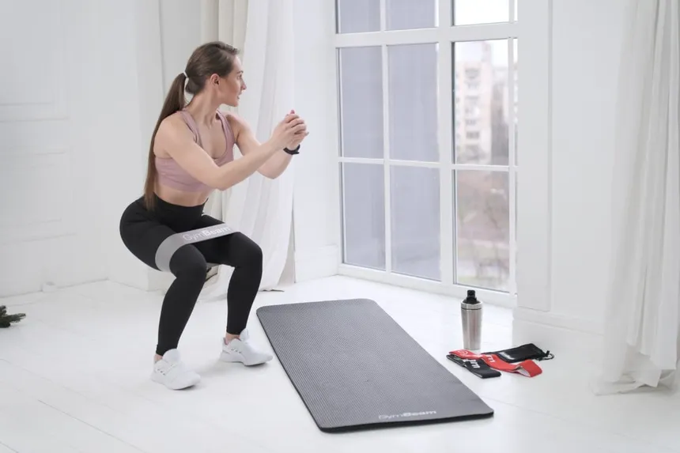
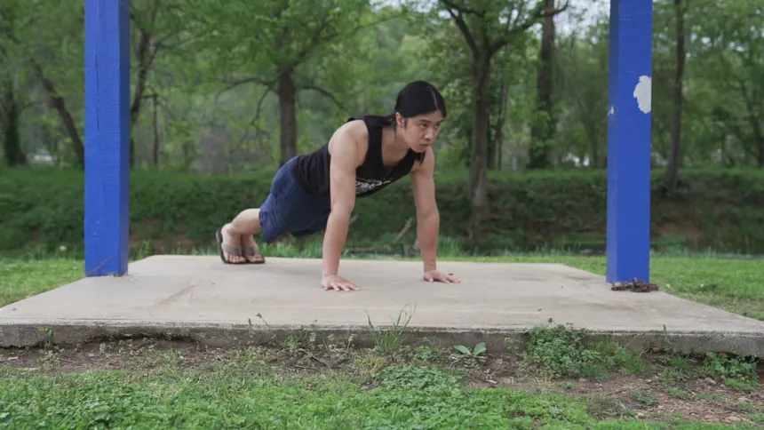
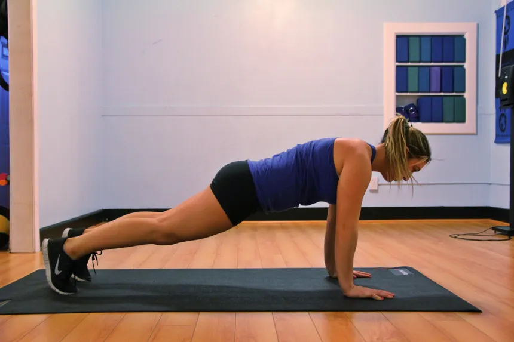
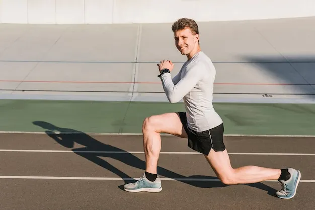

Cvičení pro každého
Cvičení je klíčovým prvkem zdravého životního stylu. Pravidelný pohyb nejen zlepšuje fyzickou kondici, ale také přispívá k lepšímu duševnímu zdraví, zmírňuje stres a podporuje energii během celého dne. Ať už se rozhodnete pro krátkou domácí rutinu nebo intenzivní trénink, najděte si cvičení, které vám vyhovuje a těšte se z jeho pozitivních účinků.
-
Dřepy (Squats):
- Postavte se s nohama na šířku ramen.
- Pomalu se spusťte do dřepu, jako byste sedali na imaginární židli, s důrazem na správné držení zad.
- Vraťte se zpět do výchozí pozice a opakujte.
- Dřepy posilují nohy, hýždě a zpevňují střed těla.

-
Kliky:
- Lehněte si na břicho a opřete se o dlaně, ruce jsou na šířku ramen.
- Pomalu se spouštějte směrem k zemi a pak se odtlačte zpět do výchozí pozice.
- Kliky jsou skvélé pro posílení horní části těla, především hrudníku, ramen a tricepsů.

-
Plank:
- Lehněte si na břicho, opřete se o předloktí a zvedněte celé tělo tak, aby tvořilo rovnou linii od hlavy až po paty.
- Udržujte tuto pozici co nejdéle, snažte se nezvedat zadek ani nepropadat břicho.
- Plank je skvélé pro posílení břišních svalů, zádových svalů a ramen.

-
Výpady (Lunges):
- Postavte se vzpřímeně, jednu nohu udělejte krok vpřed a spusťte tělo dolů, dokud obě kolena nebudou v pravém úhlu.
- Vraťte se zpět a opakujte s druhou nohou.
- Výpady posilují nohy, hýždě a zpevňují střed těla.
